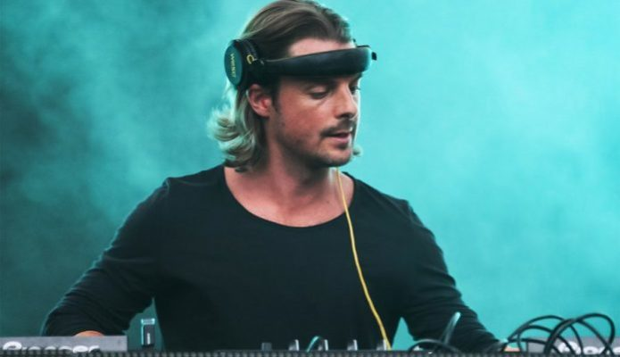
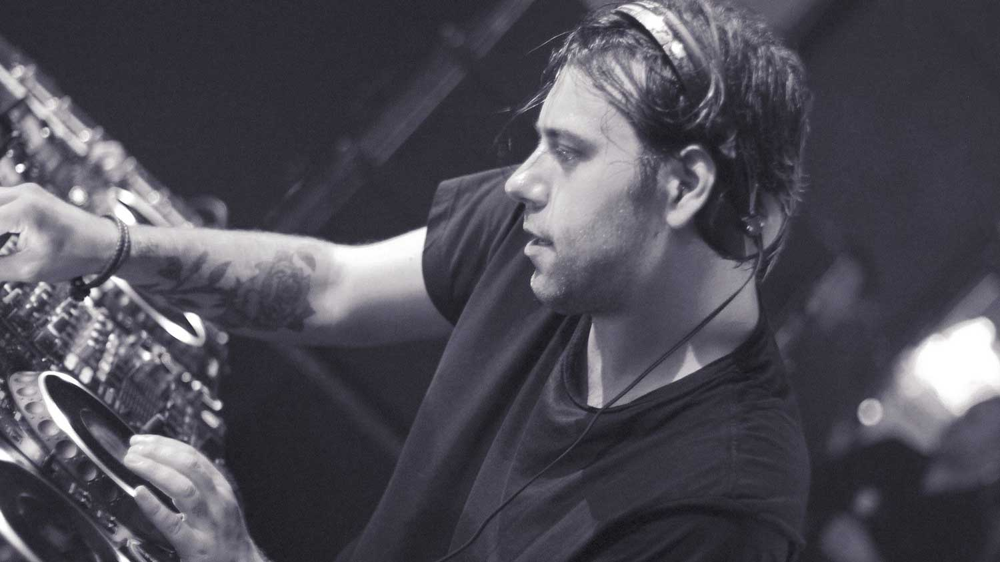
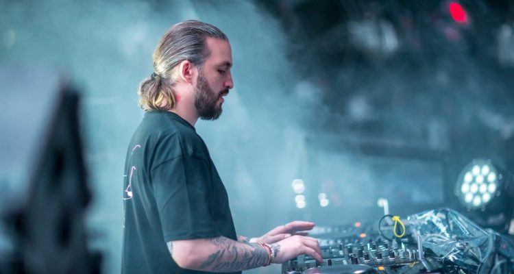

Members Swedish House Mafia

Axwell
DJ & Record producer
Axel Christofer Hedfors born 18 December 1977, better known by his
stage name
Axwell, is a Swedish DJ, record producer, remixer and owner of Axtone Records. He is a member of Swedish
House Mafia along with Sebastian Ingrosso and Steve Angello. He is a two-time DJ Awards winner, and in
2013 he was placed 19th on the DJ Magazine Top 100 DJ Poll. He remains the third-most DJ-supported
producer in the world for two consecutive years on 1001Tracklists Top 101 Producers Rankings.

Sebastian Ingrosso
DJ & Record producer
Sebastian Carmine Ingrosso born 20 April 1983 is a Swedish DJ and
record
producer. He is also a
member of the Swedish House Mafia, together with friends Axwell and Steve Angello.

Steve Angello
DJ & Record producer
Steven Patrik Josefsson Fragogiannis born 22 November 1982, better
known by
his stage name Steve Angello, is a Greek-Swedish
DJ, record producer, remixer and record label owner. He is a member of Swedish House Mafia, together
with Axwell and Sebastian Ingrosso.